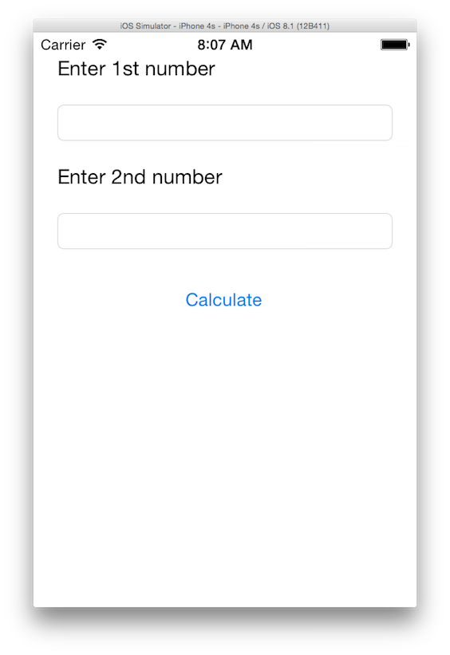

Duration
20 minutes
Lab goals
In this exercise you will modify your Xamarin.Forms application and replace the existing UI code with a new user interface to input two numbers and a button to perform a calculation with those numbers. If you use the lab instructions, your UI will look something like:
To complete this exericse, you will perform the following steps:
- Remove the existing code from the constructor method in App.cs. Recall that this file might be named Calculator.cs if you created the project in Visual Studio.
- Create a new
ContentPagewith theContentset to aStackLayoutto hold your UI elements. - Add a
LabelandEntryto prompt and get the 1st number. - Add a second
LabelandEntryto prompt and get the 2nd number. - Add a
Buttonwith theText"Calculate" - Return the creted
ContentPage.
Required Assets
You can continue using the project you created in the first exercise. If you did not create the project, you can grab the Completed project from the Lab 01 Resources folder. In addition, there is a Lab 02 Resources folder that contains a completed version of this lab to compare your work against.
Steps
Try to use the picture and above steps to complete the lab exercise, referring to the slides if you need any help in creating the UI. You can also use the following step-by-step instructions to fill in any knowledge gaps.
Delete the existing code
- Open the App.cs file in the portable project - this is the first project in your solution and is the one you will do all your work in.
- In this file you will find the definition for an
Appclass which has a constructor method. This is what Xamarin.Forms calls in order to create the single screen in the application - it's currently aLabelwith some text. - Go ahead and delete the code in the method - leave the constructor method definition itself, just remove the contents:
using Xamarin.Forms;
namespace Calculator
{
public class App : Application
{
public App()
{
// The root page of your application
// All the code in this method has been removed.
}
...
}
}
Add in a ContentPage and StackLayout
Each screen in your application is a Page. Most of the time, you will use a ContentPage to provide the screen - this allows for a single piece of content in the form of a visual element. Here, we will create the ContentPage and set it's content to a StackLayout.
- In the
Appconstructor method, create a newContentPageobject and assign it to a variable - name itpage. - Next, create a new
StackLayoutobject - remember these are used to organize children in rows or columns. We will use the default layout of rows (vertical), but you can change that if you like by setting theOrientationproperty. - Assign the
StackLayoutto a new variable namedlayout. - Set the
page.Contentproperty to be yourStackLayoutvariable. - Assign the
pageto theMainPageproperty - this assignment is what will tell Xamarin.Forms to use this page as the main screen. - Build (and run) the program. It should display an empty screen.
- Next, let's give it a little visual tweaking. Set the following properties on the
StackLayout, try using the property-initializer syntax!:Padding= 20Spacing= 20
StackLayout. - Build and run the app again - it should now have a gray background.
Add in your child views
Next, let's add in the views to show and collect our required data. Remember, we want our UI to look like this:

- Create a new
Labeland set theTextproperty to "Enter 1st number", assign it to a variable namedlabel. - Add the label into the
StackLayoutwith the following code: - Create and add an
Entrycontrol to theStackLayoutusing the same basic code. - Add a second
Labelwith the text "Enter 2nd number" and a secondEntryinto theStackLayout. - Finally, add a new
Buttonwith the text "Calculate" to theStackLayout. - Build and run the application and verify the app looks like the screen shown above.
Label label = new Label() { Text = "Enter 1st number" };
layout.Children.Add(label);
Summary
In this lab exercise, you created the UI for a calculator in Xamarin.Forms and are able to run it in a mobile application on an iPhone, Android or Windows Phone! Next we will add some behavior into the application to make it work.